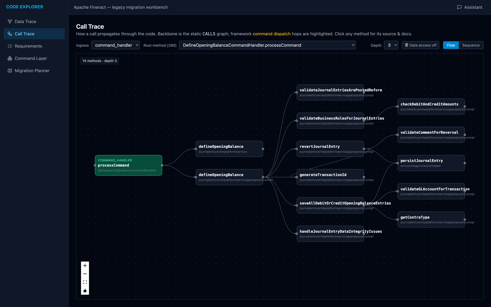
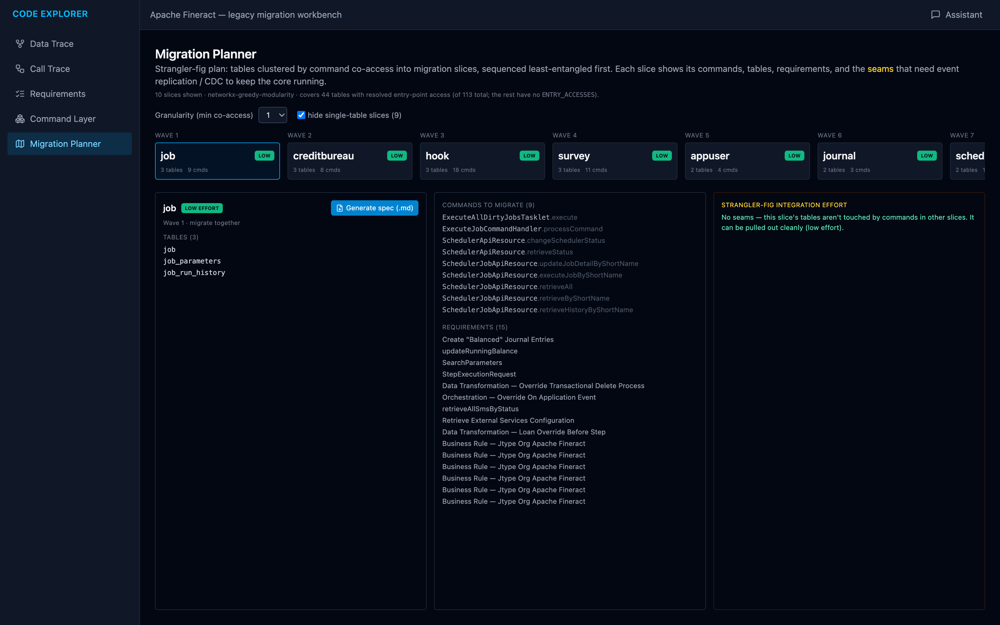

EPAM Internal · Pursuit Support
Trafigura estate
rationalisation
Where our approach beats analysts with prompts — and what is real today
EPAM
The situation
A small assessment that decides a large implementation
What Trafigura asks for
- An automated, on-site assessment of its application estate: AppCat comparison, AI-based analysis, human validation.
- Per application: name and metadata, user count, tech stack, version and type (on-prem, SaaS, AWS), functional summary.
- Options per application: treatment, timeline, costs phased over time. Removal is preferred; replacements preferably AI-built in-house.
- Hard constraints: tooling runs on their network, no data offsite except as a stated last resort, security approval required, Trafigura owns data and findings.
Why it matters to EPAM
- The assessment itself is small.
- The implementation that follows is large, and Trafigura can award it without a new tender.
- AI, accelerators and automated tooling appear twice among the eight scoring criteria; data availability after the analysis is a third.
What most vendors will likely bring
- Analysts and application-owner interviews.
- An LLM run over AppCat and existing documentation.
- A well-formatted spreadsheet and report. Cheap, fast, and meets the letter of the RFP.
Ten days to proposal
28 Sep
RFP released
29 Sep · Today
Confirm participation · RTB
2 Oct
Discovery calls close
9 Oct
Proposal due
13 Oct
Selection
To win, we have to be visibly better than analysts with prompts — on evidence, not on slides.
Where we differ
Analysts with prompts versus evidence on site
| Question | Typical response: analysts with prompts | Our approach: evidence on site |
|---|---|---|
| How many users does an application have? | Owner interviews and estimates | Counted from SSO and access logs |
| Is it dormant? | Owner opinion, renewal history | Activity across the log retention window, cross-checked with licence use |
| Which records belong together? | Manual matching in a spreadsheet | AppCat, hosts, SSO clients and licences linked with a confidence rating; doubtful links go to a reviewer |
| What happens to the data afterwards? | A report that ages by the next renewal | Data stays on Trafigura's network, owned by them, re-runnable before each renewal |
| What about Replace candidates? | Starts from scratch in the implementation | Business rules and data footprint already recovered from code, ready for the Playbook |
And the evidence base compounds — a foundation for migration and modernization
A basis for migration & modernization
Dependencies, call graph and recovered business rules carry straight into build — the implementation doesn't re-discover the estate.
More sources, linked in over time
Each source is a plugin: CMDB, logs, licences, cloud and code join the same model without rework, so coverage keeps growing.
A constant, up-to-date knowledge base
Re-run on a schedule inside Trafigura's network; always reflects today's estate, queryable through the UI and MCP.
On a small estate with a clean AppCat and little in-house code, this advantage shrinks — the discovery call tells us how much weight the tooling deserves.
Status
What is built and what we still build
Built and demonstrable today
 Data Trace — tables and columns an operation touches
Data Trace — tables and columns an operation touches
Call Trace — how calls flow from an entry point Requirements — business rules recovered from code
Requirements — business rules recovered from code
Migration Planner — least-entangled slices first- Code, database schema and documentation scanners
- Estate graph with vector search, UI and MCP interface
- Plugin and matching design with declared identity keys
- Proven on Apache Fineract, about 2,374 Java files; demo on our machines at any time
Built within the engagement
first six weeks of delivery
- AppCat and CMDB importer
- Server discovery
- SSO and access-log usage scanner
- Licence and contract import
- AWS inventory
- Offline on-site package with security documentation
- Two engineers, delivered within the engagement; no upfront investment
Risks we state openly
RiskLog formats are unknown until we see samples.
New scanners are generated from samples within days; we request them in the discovery call.
RiskDormancy depends on log retention.
Cross-check with licence use and flag quarter-end and year-end applications.
RiskSecurity approval takes time.
Read-only, no-egress package; the AppCat import starts before approval.
built todaybuilt within the engagement
Delivery
How the assessment runs at Trafigura
1
What we need from Trafigura
- An environment inside their network to run the package
- AppCat and CMDB exports
- Read access to servers and repositories
- SSO and access logs, with their retention period
- Licence and contract records, including renewal dates
- Named technical, security and finance contacts
2
How it runs
Install and scan · about 4 weekssecurity approval, AppCat and CMDB import, scanners across a first bounded scope
Analysis and options · about 4 weeksvalidate findings with application owners, assign treatments, wave plan and business case
Team: engagement lead, commodity-trading SME, solution architect, two scanner engineers.
Largely remote, with presence in London and Geneva when needed.
3
What Trafigura gets
- A validated inventory of every application in scope, with the source behind each value
- A treatment per application: retire, consolidate, replace or retain
- A wave plan aligned to licence and contract renewal dates
- A business case with costs by area, phased over time
- All data and findings, owned by Trafigura and kept on their network
Option beyond the RFP: the same model can keep running as the basis for managing the estate, and feeds Replace candidates straight into the AI Application Modernization Playbook. Offered as an option, not priced into this bid.
Decisions
What we decide today and what we ask on 2 October
1
Go to bid
with the Playbook as the method and the Estate Scanner as the on-site accelerator, built out within the engagement.
2
Proposal lead
for the 9 October submission. Stefan owns the scanner and solution part.
3
Discovery team
for the 2 October call, including someone with commodity-trading knowledge.
Also to align: bandwidth from Vitalijs · positioning next to MigVisor
Discovery questions that set the weight of the tooling
- How many applications are in scope?
- How complete and current is the AppCat listing?
- What share of the estate is built in-house versus purchased or SaaS?
- Which log sources exist, and how long are they retained?
- Where do licence and contract data live, including renewal dates?
- What does security approval for supplier tooling involve, and how long does it take?
Evidence over opinion. The demo shows what is real today.